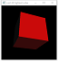
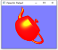

Author: Zhongxin Hu (sign your name here)
Date: 2021/09/14 (insert the date)
Check readme.txt for lab work statement and self-evaluation.
Frame buffer is part of Ram and designed to hold the grphic data of frame of image under raster display
The most basic part of an raster image tons of pixels build up an raster image.
the higher the color depth is the more aviable colors can be use and is the number bits of color of pixel used in frame buffer
number of pixels
row of pixels
the reason we need refreshment in raster display is we want to draw new images and a frame need to be refresehed before draw new frame
Its menas a full scan and display an image on screen
Generate the skeleton of the image and let the gpu do the rest
calculate the graphics function such as graphic primitives with lighting effects and trasformations, its like rendering
Complete? (Yes)
If Yes, insert a screen shot image to show the completion.
 
If No, Add a short description to describe the issues encountered.
Complete? (Yes)
If Yes, insert a screen shot image to show the completion.
If No, Add a short description to describe the issues encountered.
Complete? (Yes)
If Yes, insert a screen shot image to show the completion.
If No, Add a short description to describe the issues encountered.
References